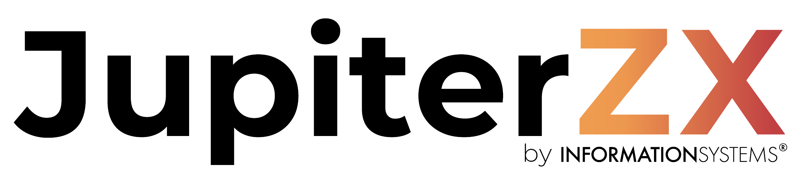
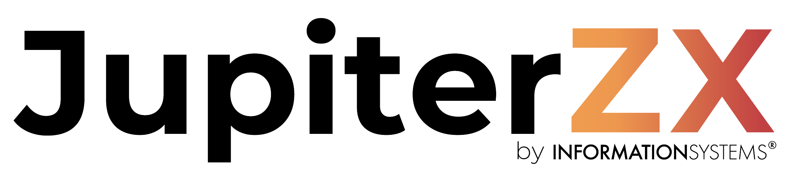

Transformando o CX com 
Nossa proposta para transformar o seu CX com Genesys Cloud CX

Nossa proposta para transformar o seu CX com Genesys Cloud CX
Este eBook apresenta as principais soluções que oferecemos com o JupiterZX e o Genesys Cloud, mostrando como essas ferramentas podem transformar a experiência do cliente (CX) na sua empresa. Descubra como estamos alinhando inovação e estratégia para entregar resultados reais e fortalecer sua comunicação interna e externa.
JupiterZX é a proposta desenvolvida pela Information Systems para transformar o CX de nosso cliente, com Genesys Cloud CX, unido às funcionalidades da plataforma Jupiter.
Com essa abordagem capacitamos nossos clientes a estabelecer operações mais ágeis e conectadas, em que cada contato interno e externo é uma oportunidade para gerar valor estratégico e impacto positivo. Nosso objetivo é ir além da entrega, queremos oferecer uma nova forma de estar ao lado do cliente, fortalecendo suas capacidades e permitindo que cada operação e interação se alinhem aos seus objetivos essenciais.